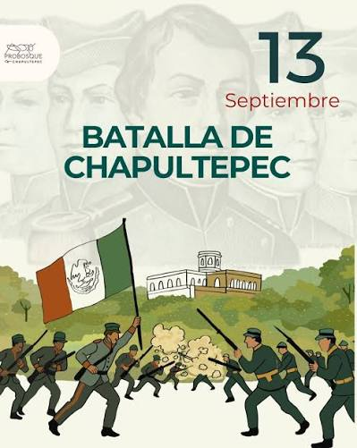
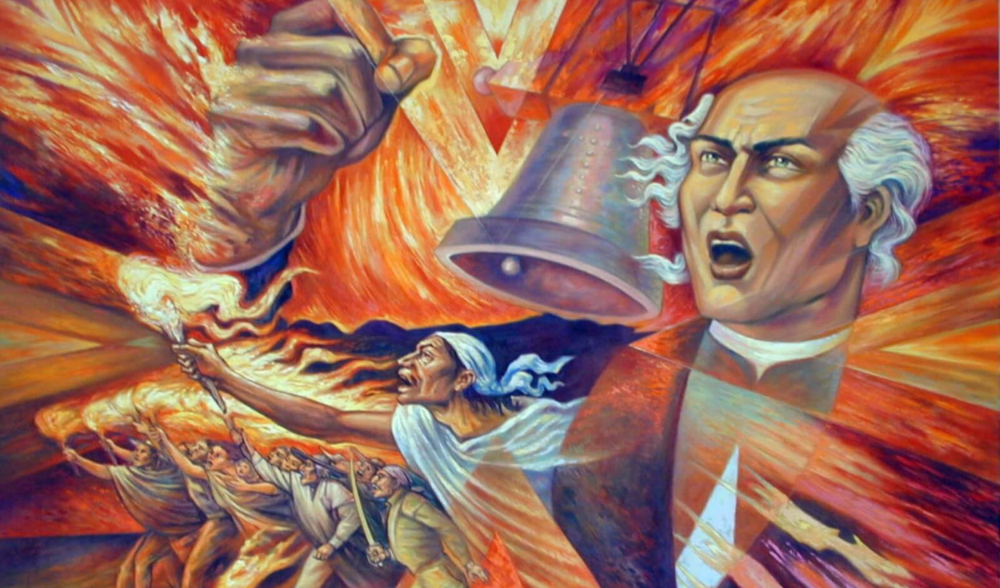
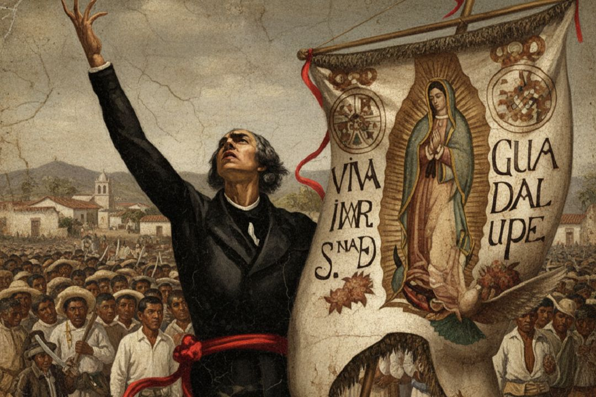
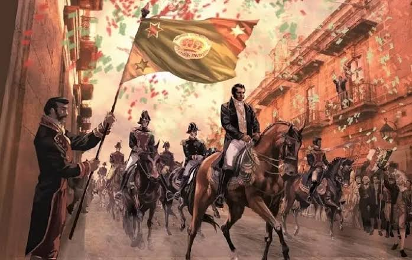
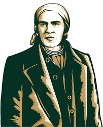

SEPTIEMBRE
"Acontecimientos mas relevantes del mes patrio"

"Acontecimientos mas relevantes del mes patrio"
Ocurrió durante la guerra entre México y Estados Unidos. El ejército estadounidense, con más de 7,000 soldados, atacó el castillo que estaba defendido por menos de un millar de mexicanos.
Las fuerzas nacionales estuvieron encabezadas por el general Nicolás Bravo y el teniente coronel Felipe Santiago Xicoténcatl al frente del Batallón de San Blas
Se recuerda la muerte de seis jóvenes cadetes llamados “Los Niños Héroes”: Juan de la Barrera, Juan Escutia, Francisco Márquez, Agustín Melgar, Fernando Montes de Oca y Vicente Suárez
El castillo cayó en manos de las tropas invasoras tras un fuerte bombardeo y combate cuerpo a cuerpo, lo que condujo a la entrada del ejército de Estados Unidos a la Ciudad de México

El Grito de Independencia es el acto con el que se conmemora el inicio de la lucha armada por la independencia de México, realizado cada noche del 15 de septiembre.
Existían reuniones secretas en Querétaro organizadas por Miguel Domínguez y su esposa, Josefa Ortiz de Domínguez.
Los planes fueron descubiertos por las autoridades españolas.Con el repique de campanas, Hidalgo reunió a los feligreses y dio una arenga con vítores a la religión, a la Virgen de Guadalupe y en rechazo al mal gobierno
Aunque el evento real fue en la madrugada del 16, la fiesta cívica se conmemora la noche del 15 de septiembre con el presidente o autoridades tocando la campana y dando el grito desde los balcones oficiales.

Aunque el evento real fue en la madrugada del 16, la fiesta cívica se conmemora la noche del 15 de septiembre con el presidente o autoridades tocando la campana y dando el grito desde los balcones oficiales.
Liderada por el sacerdote José María Morelos y Pavón. Creó los Sentimientos de la Nación y declaró formalmente la independencia. Concluyó con su ejecución en 1815.
Una fase de guerrillas encabezada por figuras como Vicente Guerrero y Guadalupe Victoria
Se firmó el Plan de Iguala por Agustín de Iturbide y Vicente Guerrero,uniendo a insurgentes y realistas para sellar la soberanía del país

El Abrazo de Acatempan (Febrero de 1821): Agustín de Iturbide y el líder insurgente Vicente Guerrero se unieron para buscar la autonomía de España
El Plan de Iguala (24 de febrero de 1821): Se proclamó este plan que estableció las "Tres Garantías": Religión, Unión e Independencia, creando el Ejército Trigarante
Los Tratados de Córdoba (Agosto de 1821): Se firmaron los acuerdos que reconocieron la soberanía de la nueva nación, llamada Imperio Mexicano.
El Acta de Independencia (28 de septiembre de 1821): Un día después de la entrada del ejército a la capital, se firmó oficialmente el acta que daba nacimiento al nuevo país

José María Morelos y Pavón nació el 30 de septiembre de 1765 en la ciudad de Valladolid (hoy llamada Morelia en su honor), en el estado de Michoacán,México
Sus padres fueron José Manuel Morelos, carpintero mestizo y Juana María Guadalupe Pérez Pavón de origen criollo.
El joven José María inició a trabajar a edad temprana, más adelante ingresó al Colegio de San Nicolás de su ciudad natal, tuvo la convicción de continuar con sus estudios eclesiásticos hasta su ordenación sacerdotal,vocación que le permitió conocer casi todos los pueblos que constituían la Provincia de Michoacán.
De 1811 a 1813 logró conquistar la mayor parte del sur del país. En el actual estado de Morelos, combatió en el Sitio de Cuautla, asimismo organizó el Congreso de Anáhuac y el primer cuerpo legislativo en Chilpancingo que finalmente logró aprobar la primera Constitución el 22 de octubre de 1814, después de ello, Morelos sufrió varias derrotas que lo llevaron a ser capturado. Falleció el 22 de diciembre de 1815.
